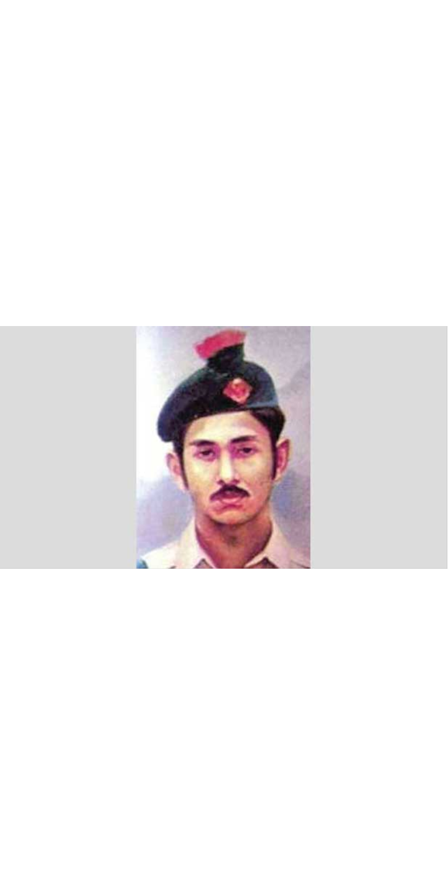

Family of Prime Minister Sheikh Hasina
Sheikh Hasina was born on September 28, 1947, at Tungipara a remote village under Gopalganj district, which is also the birthplace of Bangabhandhu Sheikh Mujibur Rahman, the founding father and first president of Bangladesh.Hasina's motherBegum Fazilatunnesa was widely appreciated as atender hertead lady.
Bangabhandu Sheikh Mujibur Rahman
Begum Fajilatunnesa Mujib
Brothers and sister

Brother Sheikh Jamal
Brother Sheikh Kamal
Youngest Brother Shikh Rasel
Only Sister Sheikh Rehena